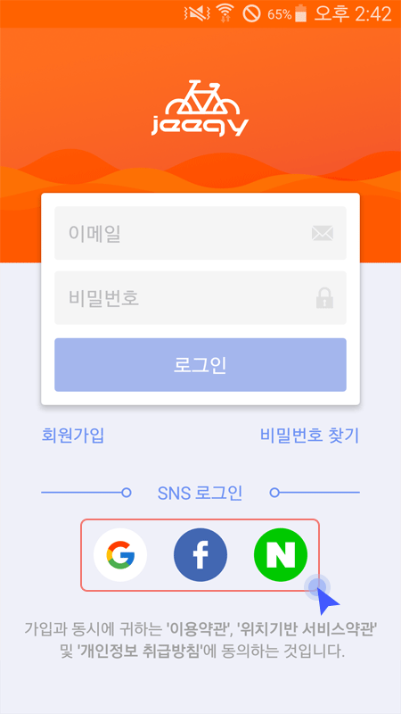
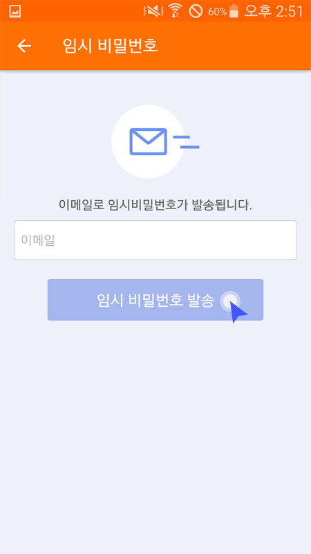

로그인 방법에는 2가지가 있습니다.
① 회원가입시 입력한 이메일로 로그인하기
회원가입시 입력한 이메일과 비밀번호를 입력하고 로그인 합니다.
② sns 계정으로 로그인하기
보유하고 계신 SNS 계정중 하나를 선택하여 로그인합니다.
로그인화면에서 ‘비밀번호 찾기'버튼을 클릭하여 이동합니다.
가입시 등록한 ‘이메일'을 입력하고 ‘임시 비밀번호 발송'버튼을 클릭하면 등록된 이메일로 임시 비밀번호가 발송됩니다.
* 임시 비밀번호 발급은 1시간에 1회로 제한됩니다.
* 임시 비밀번호의 유효기간은 24시간 입니다.
* 임시 비밀번호 수신에 어려움이 있다면 support@cssmart.co.kr 로 문의 주시기 바랍니다.
* 구글계정과 페이스북계정 사용자는 비밀번호 찾기 기능이 없습니다.